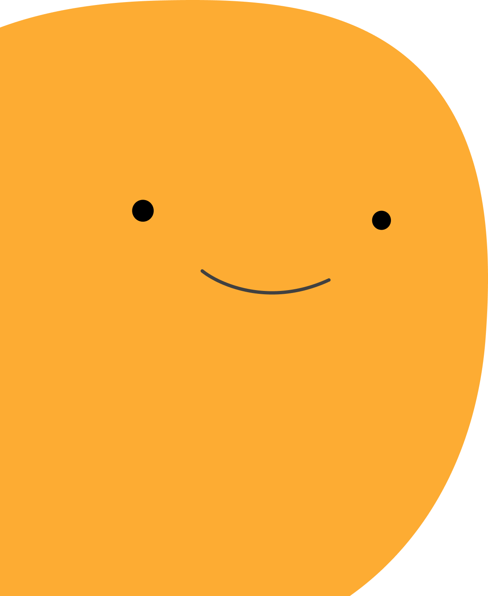

Home


StickMyStress
A stress journal can help you identify the regular stressors in your life and the way you deal with them. Write down the cause, your thoughts, and your mood. If you haven't done so already, scroll up and use the sticky notes to write them down.
Is the real world too much to handle? Disappear into a hot bodice ripper, blood-pumping thriller, or maybe a faraway epic fantasy. A great read can take your mind off your worries.
Increasing your time outside (which could be as simple as taking a walk) will likely do wonders for your mood and outlook on life. Get outside of the building and take a quick walk to your favorate Boba shop might be a brilliant idea!
Bring back the white space to your life and set a repetitive timer for deep breathing or meditation. In fact, meditation has been scientifically proven to help alleviate stress after just eight weeks of regular practice.
Avoiding mistakes does not lead to fewer mistakes , but creates unnecessary pressure and stress. Remember that people are too busy to care about your mistakes and life is too short to worry about what other think of you.
The answer to washing away a day of stress may be in your bathroom. Hot water is known to help release endorphins and increase blood flow to the skin. Warm baths can also improve breathing，reduce risk of heart attack and lower blood pressure.